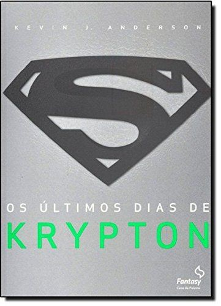

Quais são os melhores livros de ficção? Sem dúvida, candidatos não faltam, porque felizmente a produção literária mundial ao longo de séculos brindou a humanidade com diversas histórias inesquecíveis, imortais, clássicos que transcendem o tempo e marcam gerações.
E devido a essa fartura de obras literárias de qualidade, formar uma lista de melhores livros de ficção não é tarefa fácil. Pelo contrário, é até arriscada, pois sempre há o risco de deixar alguma obra importante de fora. Mas, isso é inevitável.
Esse é o objetivo principal: fazer o leitor ideal encontrar o livro perfeito. Confira a nossa lista de melhores livros de ficção!

Jogos Vorazes - Suzanne Collins (+12)
Na região antigamente conhecida como América do Norte, a Capital de Panem controla 12 distritos e os força a escolher um garoto e uma garota, conhecidos como tributos, para competir em um evento anual televisionado. Todos os cidadãos assistem aos temidos jogos, no qual os jovens lutam até a morte, de modo que apenas um saia vitorioso. A jovem Katniss Everdeen, do Distrito 12, confia na habilidade de caça e na destreza com o arco, além dos instintos aguçados, nesta competição mortal.
Os últimos dias de Krypton - Kevin J. Anderson (+14)
Antes do Apocalipse – que fez o bebê conhecido mais tarde como Clark Kent ser enviado à Terra – Krypton prosperava. Na cidade de Kandor o cientista Jor-El e a historiadora Lara casaram-se e tiveram Kal-El o único que sobreviveria ao fim do mundo. Tudo era harmonia e perfeição numa civilização com baixíssimo índice criminal quando um alienígena invade o planeta e provoca uma tragédia irremediável para os kryptonianos. É a grande chance do diabólico General Zod tomar o poder e implantar uma ditadura que usará da invenção tecnológica de Jor-El para subjugar a todos. E em meio a tudo isso uma tragédia fatal se aproxima – um destino catastrófico profetizado por Jor-El que mudaria a história kryptoniana para sempre.
O Orfanato da Srta. Peregrine Para Crianças Peculiares - Ransom Riggs (+12)
A história do livro gira em torno do protagonista Jacob, um garoto de 16 anos que depois de uma tragédia que ocorre de forma misteriosa em sua família, ele decide que quer viajar para a ilha onde era o orfanato que seu avô viveu quando jovem, de onde sempre ele lhe contava várias histórias do local e das crianças que viviam junto com ele, mostrando-lhes fotografias antigas e bizarras dessas crianças. Durante a narrativa podemos acompanhar muito mistério na ilha, sobre o que aconteceu com o orfanato, e aos poucos vamos descobrindo com Jacob sobre o seu avô, sobre se as histórias que ele contava serem verdadeiras ou não, sobre criaturas que não imaginava existirem de verdade, e sobre o que seria ser peculiar.
A Guerra dos tronos - George R. R. Martin (+18)
Como Guardião do Norte, lorde Eddard Stark não fica feliz quando o rei Robert o proclama a nova Mão do Rei. Sua honra o obriga a aceitar o cargo e a deixar seu posto em Winterfell para rumar à corte, onde os homens fazem o que lhes convém, não o que devem… e onde um inimigo morto é algo a ser admirado.Longe de casa e com a família dividida, Eddard se vê cada vez mais enredado nas intrigas mortais de Porto Real, sem saber que perigos ainda maiores espreitam à distância.Nas florestas ao norte de Winterfell, forças sobrenaturais se espalham por trás da Muralha que protege a região. E, nas Cidades Livres, o jovem Rei Dragão exilado na Rebelião de Robert planeja sua vingança e deseja recuperar sua herança de família: o Trono de Ferro de Westeros.